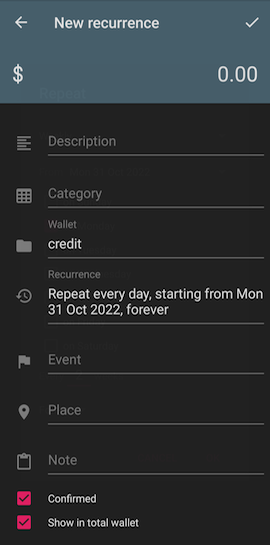
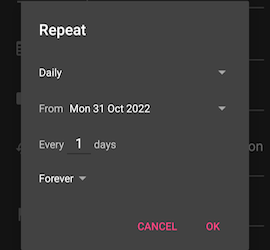
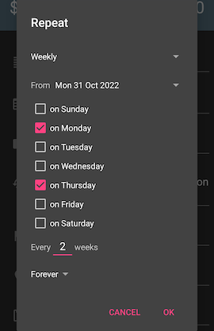
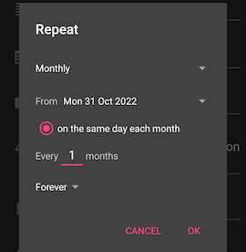
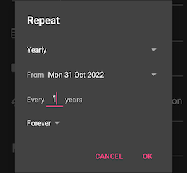

Recurrences
A recurrence is a way of creating a periodic, repeating transaction (or transfer).
It is similar to a model because they are both templates. The difference is that you still have to manually tap a button on a model, but a recurrence is automatic.
An example use case is a recurring bill every month, or a paycheck every 2 weeks.
Creating a recurrence
Open the app's Left menu > Recurrences. Switch to the transactions or transfers tab, then tap the + button in the lower right corner.

From here, the menu is the same as creating a transaction or a transfer. Instead of a time field, you are asked to enter a recurrence rule. Tap on it to bring up the recurrence rule wizard.
First choose a recurrence type: daily, weekly, monthly or yearly.
Daily rules could be "repeat every 5 days."

Weekly rules allow you to select the days of the week, like "Monday and Thursday."

Monthly rules occur on the same date each month, such as "March 1, April 1, May 1." 
Yearly rules repeat on the same date every year, such as "October 31." 
Select the skip amount (every X days/weeks/months/years).
Select the end condition. This could be forever, or "for" X times, or until a future date.